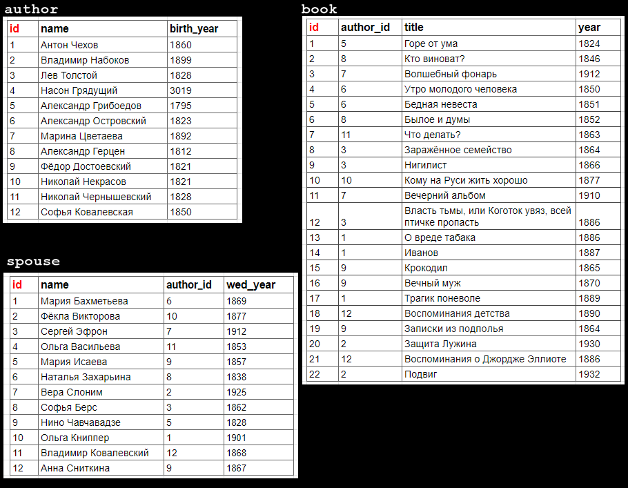
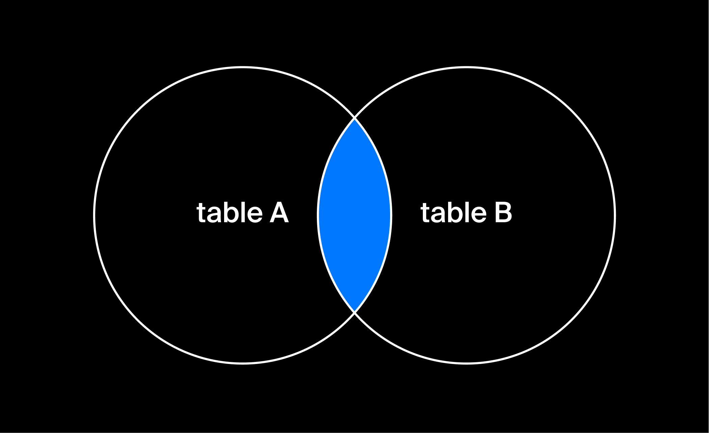
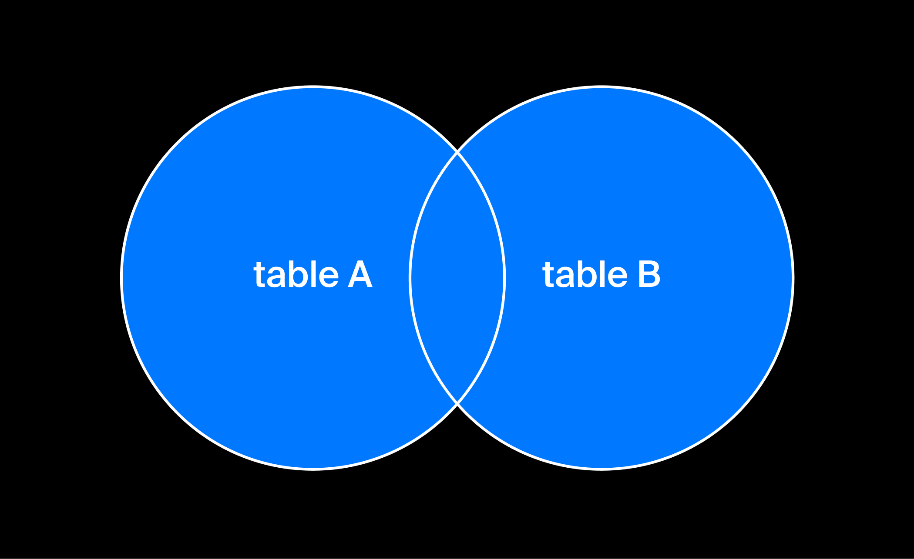
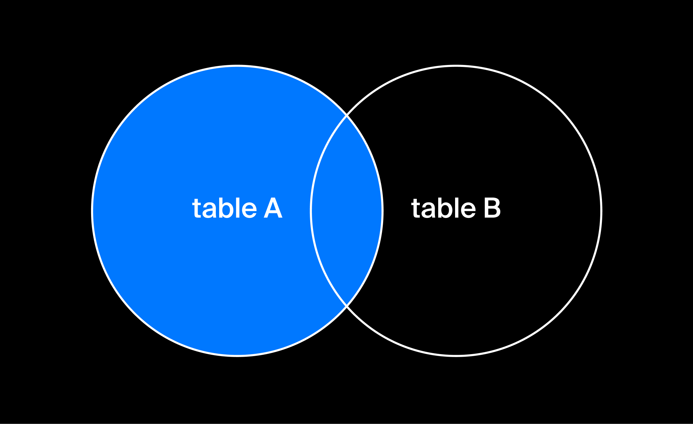
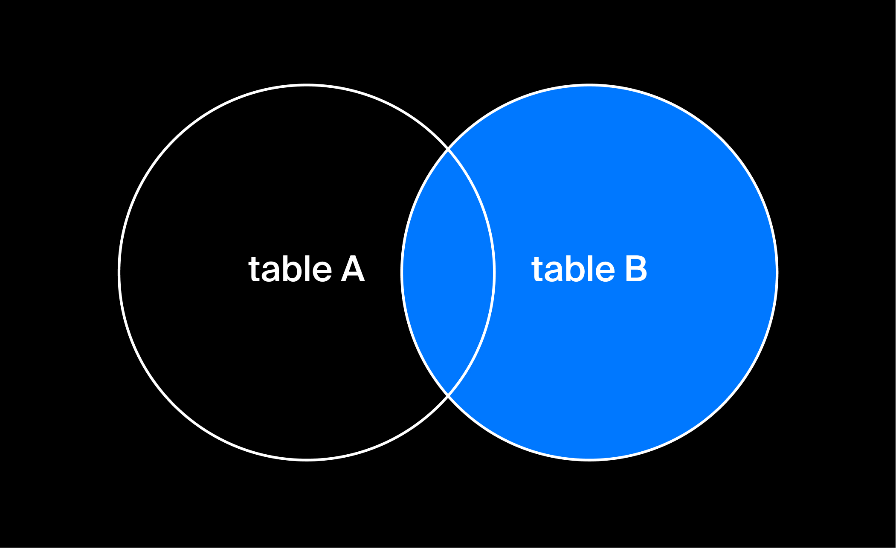
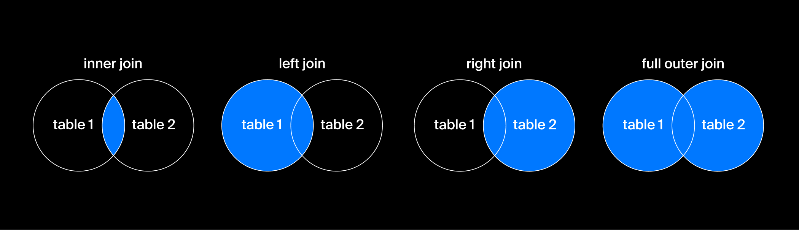

JOIN-запросы
Прекрасный способ сделать выборку из нескольких таблиц — это запрос с ключевым словом JOIN. В JOIN-запросе можно указать тип связи между таблицами и условие их объединения.
Тип связи для JOIN может быть указан ключевыми словами FULL, OUTER/INNER, LEFT/RIGHT. Если тип связи явно не указан, то применяется INNER JOIN.
В запросе блок JOIN идёт сразу после блока FROM:
Скопировать кодSQL
SELECT
Таблица1.ИмяСтолбца1,
...
FROM
Таблица1
JOIN Таблица2
ON Таблица1.ИмяСтолбцаN = Таблица2.ИмяСтолбцаM
WHERE

Так вы уже умеете, вы делали это в прошлом уроке:
Скопировать кодSQL
SELECT
author.name,
book.title,
book.year
FROM
author,
book
WHERE
book.year = 1886 AND book.author_id = author.id;
Аналогичный запрос с ключевым словом JOIN выглядит так:
Скопировать кодSQL
SELECT
author.name,
book.title,
book.year
FROM
author
JOIN book
ON book.author_id = author.id
WHERE
book.year = 1886;
Результат обоих запросов будет одинаков:
Скопировать кодSQL
name title year
Лев Толстой Власть тьмы, или Коготок увяз, всей птичке пропасть 1886
Антон Чехов О вреде табака 1886
Софья Ковалевская Воспоминания о Джордже Эллиоте 1886
Но только JOIN может без особых ухищрений сделать запрос «SQL, найди мне всех авторов в таблице author, у которых нет ни одной книги в таблице book»:
sql
SELECT
author.id,
author.name,
author.birth_year
FROM
author
LEFT JOIN book
ON book.author_id = author.id
WHERE
book.title IS NULL;
Результат:
Скопировать кодSQL
id name birth_year
4 Насон Грядущий 3019
При обработке запроса JOIN в вычислениях участвуют две таблицы, которые условно называют «левая» и «правая». «Левая» — это та, которая вызвана в блоке FROM, «правая» указывается после ключевого слова JOIN.
Запрос JOIN позволяет назначить одну из таблиц «главной», а из другой таблицы вывести данные, связанные с найденными в «главной».
Тип этой связи может быть указан ключевыми словами FULL OUTER, INNER, LEFT, RIGHT. По умолчанию применяется INNER.
Ключевое слово назначает «главной» таблицей «левую» (при LEFT JOIN) или «правую» (при RIGHT JOIN). В примере запроса о писателях без книг «левая» таблица — это author, а «правая» — book.
При запросах FULL OUTER JOIN и INNER JOIN таблицы равнозначны, «главной» нет.
Вот фрагмент базы данных детского сада. В таблице А собраны мальчики, в таблице Б — девочки. Дети одеты в карнавальные костюмы.
Скопировать кодSQL
id costume id costume
1 Пират 1 Жучка
2 Снежинка 2 Пират
3 Котик 3 Принцесса
4 Буратино 4 Котик
Дети не очень понимают как себя вести, но воспитатель хочет, чтобы они все вместе начали что-то делать. В зависимости от задач дети будут разбиваться на пары или собираться в какие-то группы.
- INNER JOIN выберет из перечисленных таблиц только те записи, у которых совпадают значения заданных в условии ON полей. Подойдёт для танцев, где каждому участнику нужна пара в таком же костюме. Находим одинаковых и отправляем на сцену, остальных не показываем. Пусть сидят у стенки на стульчиках.
Скопировать кодSQL
SELECT * FROM TableA
INNER JOIN TableB
ON TableA.costume = TableB.costume;
id costume id costume
1 Пират 2 Пират
3 Котик 4 Котик
Графическое представление INNER JOIN

- При запросе FULL OUTER JOIN выводятся все записи из обеих таблиц. Те записи, у которых запрошенные значения совпадают — выводятся парами, остальные выводятся поодиночке. Всё примерно так же, как в прошлом примере, но те, у кого нет пары — тоже выходят на сцену.
Скопировать кодSQL
SELECT * FROM TableA
FULL OUTER JOIN
TableB
ON
TableA.costume = TableB.costume;
id costume id costume
1 Пират 2 Пират
2 Снежинка null null
null null 1 Жучка
3 Котик 4 Котик
null null 3 Принцесса
4 Буратино null null

- LEFT JOIN — в результат попадают все подходящие записи из левой таблицы, а из правой — только записи, отвечающие условию в блоке ON. Всех мальчиков просят выйти и стать в ряд, и только те девочки, для которых есть пара, могут стать рядом с мальчиками.
Скопировать кодSQL
SELECT * FROM TableA
LEFT JOIN
TableB
ON
TableA.costume = TableB.costume;
id costume id costume
1 Пират 2 Пират
2 Снежинка null null
3 Котик 4 Котик
4 Буратино null null

- RIGHT JOIN — в результат попадают все подходящие записи из правой таблицы, а из левой — только записи, отвечающие условию в блоке ON. Все девочки выходят на сцену, а мальчиков выпускают только тех, для кого есть пара.
Скопировать кодSQL
SELECT * FROM TableA
RIGHT JOIN
TableB
ON
TableA.costume = TableB.costume;
id costume id costume
null null 1 Жучка
1 Пират 2 Пират
null null 3 Принцесса
3 Котик 4 Котик

В зависимости от конкретной базы синтаксис JOIN-запросов может меняться, но обычно есть возможность выбрать необходимую комбинацию модификаторов LEFT, RIGHT, FULL и OUTER для создания необходимого JOIN-запроса.
